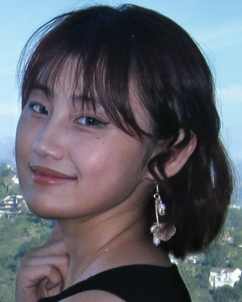

Chenyi (Skylar) Ding
MA student in Linguistics, University of California, Davis
I work in computational psycholinguistics. I use language models as models of linguistic input and of human expectation, and test their predictions against how adults read in a first and a second language and how children learn words.
I am a second-year MA student advised by Emily Morgan. Two questions run through my current projects. First, do second-language readers weight syntactic and semantic cues differently from native readers? With Emily Morgan, I decompose GPT-2 surprisal into syntactic and semantic parts and relate each to eye-movement data from L1 and L2 readers. Second, how much of the order in which children learn words can be read off the structure of the input alone? With Masoud Jasbi and Zachary Houghton, I relate the semantic geometry of child-scale language models (BabyLM) to age-of-acquisition norms. Earlier, for my BA thesis with Hong Liu, I ran a visual-world eye-tracking study on prediction in Chinese–English bilinguals.
I am applying to PhD programs for Fall 2027. Before Davis, I did my BA in English Studies at Xi'an Jiaotong-Liverpool University.
News
- Talk with Emily Morgan on decomposing language model surprisal in L1 and L2 reading accepted at LSA 2027 (San Francisco, Jan 2027).
- Paper on age of acquisition in BabyLM representations accepted at the BabyLM Workshop, EMNLP 2026 (Budapest). A poster on the same project accepted at BUCLD 51 (Boston, Nov 2026).
- Presented work on semantic entropy as a reliability diagnostic for LLM-based content analysis at IC²S² 2026 (Burlington, VT).
Publications
Papers
Reading acquisition order out of BabyLM representations: Child-scale training produces developmentally aligned semantic spacesForthcomingDing, C., Houghton, Z. N., & Jasbi, M. Proceedings of the BabyLM Workshop at EMNLP 2026, Budapest, Hungary.
The joint influence of proficiency and cognitive processing efficiency on L2 predictive sentence processingUnder reviewDing, C., & Liu, H. Second Language Research.
Working papers
Why here and not there? A pragmatic account of selective errors in LLM-based construct extractionDing, C., Chen, S., Zhao, Z., Ye, M., & Frey, S.
Mapping construct operationalization practices: An LLM-based extraction approach to detecting jingle-jangle fallacies in social scienceChen, S., Ding, C., Zhao, Z., Ye, M., & Frey, S.
Talks and posters
Decomposing language model surprisal reveals differential cue weighting in L1 and L2 readingDing, C., & Morgan, E. Talk, Annual Meeting of the Linguistic Society of America (LSA 2027), San Francisco, CA, January 2027.
Children's word-learning order is already in their input: Age of acquisition in the semantic space of a child-scale language modelDing, C., Houghton, Z. N., & Jasbi, M. Poster, 51st Boston University Conference on Language Development (BUCLD 51), Boston, MA, November 2026.
Measuring pragmatic difficulty in LLM-based content analysis: Semantic entropy as a diagnostic for variable-level reliabilityDing, C., Chen, S., Zhao, Z., Ye, M., & Frey, S. Talk, 12th International Conference on Computational Social Science (IC²S²), Burlington, VT, July 2026.
Why here and not there? A pragmatic account of selective failures in LLM-based construct extractionDing, C., Chen, S., Zhao, Z., Ye, M., & Frey, S. Talk, Communication Horizons @ UC Davis 2026, Davis, CA, May 2026.
Pragmatic vulnerability in academic discourse: Using semantic entropy to predict where LLMs failDing, C., Chen, S., Zhao, Z., Ye, M., & Frey, S. Talk, 12th Annual UC Davis Symposium on Language Research (CLR), Davis, CA, May 2026.
Teaching
Teaching assistant, Department of Linguistics, UC Davis
- LIN 177Computational LinguisticsFall 2026
- LIN 106English GrammarSpring 2026
- LIN 1YIntroduction to LinguisticsWinter 2026, Spring 2026
- LIN 1Introduction to LinguisticsFall 2025
Grader
- LIN 105Topics in Sign Language LinguisticsFall 2026
CV
Education, publications, research and teaching experience, skills, and service.
Download CV (PDF)